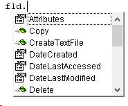
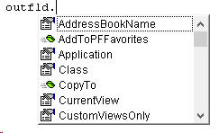

FSO
nesnesi, web server üzerinde VBScript diliyle kullanılmak için
yaratılmıştır(ancak tabiki VBA dünyasından da kullanıma girmiştir). Bu yüzden ayrı bir dll(library) içinde bulunur:
Scripting Runtime. Bu nesneyi kullanabilmek için Tools>Reference
menüsünden aşağıdaki gibi eklemek gerekir.(Tabi ki bu iş
early binding
için geçerli, late binding için böyle bir işleme gerek yoktur.)
Late binding için ise aşağıdaki gibi bir kod yeterli olacaktır. Ancak
biz kodlarımızda genellikle early binding kullanacağımız için devam
etmeden önce bu library'yi eklemenizi tavsiye ederim.
Set FSO = CreateObject("Scripting.FileSystemObject") 'Late binding
Nesne
Hiyerarşisi
Dosya işlemleriyle ilgili olarak tepede FSO
objesi bulunmaktadır. FSO kendi altında
sırasıyla şu nesneleri&collectionları bulundurur.
-
Drive(s)
-
Folder(s)
-
File(s)
-
TextStream
FSO'yu doğrudan kullanmak yerine ya bu alt nesneleri üretmek için
veya bu nesneleri temsil eden string ifadeler üzerinden işlem yapmak
için kullanırız.
Mesela bir klasörü silmek için ya fso'nun DeleteFolder metodunu
kullanıp parametre olarak da ilgili klasörün adresini yazarız, ya da
GetFolder metodu ile bir Folder nesnesi yaratıp, sonra bu Folder
nesnesinin Delete metodunu kullanırız.
Yanlız Folder nesnesini yaratırken dikkatli olmak lazım. Eğer ki,
üzerinde çalıştığınız dosyada aynı zamanda Outlook library'si için
de refearns tanımladıysanız, onun da bir Folder class'ı vardır. İki
class'ın karışmaması ve hata almamanız için Folder class'ının önüne
library adını yazmamız gerekir: Scripting.Folder
şeklinde.
Zaten şu şekilde ikisi arasındaki ayrımı görmek kolaydır:
Dim fld As Scripting.Folder
Dim outfld As Folder 'outlook folder, bunu kullanmayacağız
İki değişkenin de intellisense'ie baktığımızda çıkan üyelerin
farklı olduğunu görüyoruz.
Dosya Klasörü olan Folder'ın üyeleri böyle iken,

Outlook Klasörü olan Folder'ın üyeleri böyledir.

Madem ki bu nesneyi doğrudan kullanmayacağız, ikide
bir bu nesneden yaratmamak için bunu global seviyede public olarak
tanımlamak akıllıca olacaktır. Global tanımlamayacaksak her prosedürün
sonunda buna Nothing değerini atamak bellek yönetimi açısından iyi
olacaktır.
Şimdi bu silme işlemine ait örneğe bakalım.
Public fso As New FileSystemObject 'global tanımlama
Sub foldersil()
Dim fld As Scripting.Folder
Dim outfld As Folder 'outlook folder, bunu kullanmayacağız
fso.DeleteFolder "C:\Users\Volkan\Desktop\sil1"
Set fld = fso.GetFolder("C:\Users\Volkan\Desktop\sil2")
fld.Delete
End Sub
Metodlar
FSO'nun en sık kullanacağımız 2 temel metodu şöyledir:
- GetFolder:Folder(Klasör) nesnesi döndürür.
- GetFile:File(Dosya) nesnesi döndürür.
Bu ikisinden başka metodlar da var tabi ama bu ikisinin özelliği, diğer
2 temel
nesneyi yaratıyor olmaları.
Bu nesnenin metodlarına daha genel bir bakış ise şöyle olacaktır.
| Metodlar |
Görevleri |
|
GetDrive, GetFolder, GetFile |
Yukarda bahsettik. |
|
CreateFolder, CreateTextFile |
Yeni klasör ve dosya yaratır. |
|
DeleteFile, DeleteFolder |
Klasör ve Dosya siler |
|
CopyFile, CopyFolder |
Klasör ve Dosya kopyalar |
|
MoveFile, MoveFolder |
Klasör ve Dosya taşır |
|
DriveExists, FolderExists, FileExists |
İlgili birim mevcut mu kontrolü yapar |
NOT:Fso işlemlerinde ilgili dosya/klasör adresi verilirken son
karakterin "/" olup olmaması önem arzetmemektedir. Yani "C:\deneme"
ile "C:\deneme\" özdeştir.(Ancak daha
aşağıda göreceğimiz gibi "Dir" ile kullanırken durum farklıdır.)
Folder ve File
işlemleri
Folder/File işlemlerinde akılda tutulması gereken en önemli şey, öncelikle
dosyanın varolup olmadığını öğrenmeye çalışmaktır. Dosya özellikle
Application.FileDialog ile kullanıcıya seçtirilmemişse bu kontrol işlemini
mutlaka yapın derim. (FileDilaog ile yapılan seçimlerde bu kontrole gerek
yoktur.)
Var mı? kontrolü
Bunun içn FileExists ve FolderExists metotlarını
kullanırız.
Sub kontrol_fso()
If fso.FileExists("C:\Users\Volkan\Desktop\denemeler\deneme.xlsx") Then
Debug.Print "Dosya var"
End If
If fso.FolderExists("C:\Users\Volkan\Desktop\denemeler\") Then 'sonda \ olup olmaması farketmez
Debug.Print "Klasör var"
End If
End Sub
Klasör içindeki klasörleri elde etme
Bu işlem için SubFolders property'si kullanılır, bu
özellik bize Folders collection'ı döndürür. Gerisi ForEach yapmaktan
ibarettir.
Sub KlasördekiKlasörler()
Dim anaklasorStr As String
Dim fol As Folder, alt As Folder
anaklasorStr = "C:\Users\Volkan\OneDrive\Dökümanlar"
Set fol = fso.GetFolder(anaklasorStr)
For Each alt In fol.SubFolders
Debug.Print alt.Name
'diğer fso işlemleri
Next
End Sub
NOT:Bu işlemi FS modülündeki Dir ile de yapabiliyoruz. Başka FSO
işlemi yapacaksak(FolderExists kullanmak gibi) bu yöntemi kullanalım,
yoksa Dir yöntemini.
Klasör içindeki dosyaları elde etme
Bu işlem için Files property'si kullanılır. Folder'da
olduğu gibi bi Collection elde eder ve Foreach uygularız.
Sub KlasördekiDosyalar()
Dim anaklasorStr As String
Dim fol As Folder
Dim f As File
anaklasorStr = "C:\Users\Volkan\OneDrive\Dökümanlar"
Set fol = fso.GetFolder(anaklasorStr)
For Each f In fol.Files
Debug.Print f.Name
'diğer fso işlemleri
Next
End Sub
NOT:Bu işlemi FS modülündeki Dir ile de yapabiliyoruz. Başka FSO
işlemi yapacaksak(FolderExists kullanmak gibi) bu yöntemi kullanalım,
yoksa Dir yöntemini.
Klasör içindeki (tüm alt klasörlerin içindekiler dahil) dosyaları elde etme
Bu örnek üsttekilere göre biraz daha karmaşıklık içerir ancak mantığı
açısından güzel bir örnektir.
Alt klasörleri işleme dahil etmek için Collection
tipinde bir yığın oluşturuyoruz ve her defasında bu yığının ilk üyesi
üzerinde işlem yapıyoruz. İşlem yapmadan önce bu ilk elemanı yığından
dışarı atıyoruz ki bir daha işleme girmesin. Sonra yığındaki
elemanların(klasörlerin) her biri için işlemi yineliyoruz. Bu işlemi
anlamanın en iyi yolu, Local penceresi açıkken F8 ile ilerlemek
olacaktır.
NOT:Bunun daha hızlı ve basit you aşağıda Dir bölümünde ele alınacaktır.
Ancak fso nesnesiyle ilgili başka kontroller veya işlemler yapılması
gerekirse bu yöntemin kullanılması tercih edilmelidir. Bu arada
internette araştırırsanız başka yöntemler olduğunu da görebilirsiniz.
Kullanım tercihi size kalmış.
Bu örnekte bi klasördeki dosyaların adını, bulunduğu klasörü ve
dosya boyutunu yazdırıyoruz. Kendi diskinizdeki bir klasör ile yer
değiştirerek deneyebilrisiniz.(Örnek klasörü
buradan
indirebilirsiniz)
Sub KlasördekiAltKlasörDahilDosyalar()
Dim kls As Scripting.Folder, altkls As Scripting.Folder
Dim dosya As File
Dim klasörYığını As New Collection
Dim i As Integer
Dim YığındaNeVar As String, sabtiStr As String
Dim adım As Integer
klasörYığını.Add fso.GetFolder("C:\Users\Volkan\Videos\Movavi Screen Capture Studio\Udemy Kurslar\2-ileri vba-makro\FSO Örnek")
sabitstr = "C:\Users\Volkan\Videos\Movavi Screen Capture Studio\Udemy Kurslar\2-ileri vba-makro\"
i = 1
adım = 1
'yığındaki eleman sayısı 0 olana kadar yani tüm alt klasörler bitene kadar devam edicez
Do While klasörYığını.Count > 0
Set kls = klasörYığını(1)
klasörYığını.Remove 1 'ilk klasörü yığından çıkarıyoruz
'alt klasörleri yığına ekliyoruz
For Each altkls In kls.SubFolders
klasörYığını.Add altkls
Next altkls
'bu if bloğu informativedir, silinebilir
If klasörYığını.Count > 0 Then
For Each k In klasörYığını
YığındaNeVar = Replace(k, sabitstr, "") & ";" & Replace(YığındaNeVar, sabitstr, "")
Next k
ActiveCell(i, 1).Value = Mid(YığındaNeVar, 1, Len(YığındaNeVar) - 1)
End If
For Each dosya In kls.files
ActiveCell(i, 2).Value = adım & ". adımdaki klasör:" & kls.Name 'informativedir, silinebilir
ActiveCell(i, 2).Offset(0, 1).Value = Replace(dosya.ParentFolder, sabitstr, "")
ActiveCell(i, 2).Offset(0, 2).Value = dosya.Name
ActiveCell(i, 2).Offset(0, 3).Value = dosya.Size
i = i + 1
Next dosya
YığındaNeVar = vbNullString
adım = adım + 1
Loop
End Sub
Bu işlemi yapmanın bir diğer yolu da işlemi recursive bir şekilde ele
almaktır.
'ana prosedür
Sub recursive_fulldosya()
Dim anaklasorStr As String
anaklasorStr = "C:\inetpub\wwwroot\aspnettest\excelefendi2\"
Recursiveİlerle fso.GetFolder(anaklasorStr)
End Sub
'recursive prosedür
Sub Recursiveİlerle(kls As Variant) 'variant çünkü ilk girereken Folder sonra Folders olacak
Dim altKlasorler As Variant
Dim dosya As file
Static i As Integer ' her defasında bir önceki değerini koruması için
On Error Resume Next 'erişim izni olmayan yerlerde hata almasın diye
For Each altKlasorler In kls.SubFolders
Debug.Print altKlasorler 'bilgi amaçlıdır
Recursiveİlerle altKlasorler
Next
For Each dosya In kls.Files
ActiveCell(i, 1).Value = dosya.ParentFolder
ActiveCell(i, 1).Offset(0, 1).Value = dosya.Name
ActiveCell(i, 1).Offset(0, 2).Value = dosya.Size
i = i + 1
Next
End Sub
Diğer FSO ve File/Folder işlemleri
Dosyaları ReadOnly yapmak
Bu işlemi de FS modülü ile yapabiliyoruz. Neden böyle
bir işlemi yapmak isteyeceğimi orada açıklıyorum. Burada sadece
kısaca bu işlemin nasıl yapıldığına bakalım. Önceki örneklerde
olduğu gibi eğer File nesnesi ile FileSystem ile yapılamayacak başka
işlemler yapacaksanız bu yöntemi kullanın, yoksa en hızlısı
FileSystem olduğu için onu kullanın.
dosyaStr = "C:\deneme.xlsx"
Set dosya = fso.GetFile(dosyaStr)
dosya.Attributes = 1 'bu özellik hem okunur hem yazılırdır
Silme işlemi
Yine FS ile de yapılabilir ve öncekilerde olduğu gibi FS'nin Kill
fonksiyonunu kullanmak FSO'nun metodlarından daha efektiftir, özellikle
büyük çaplı işlemlerde.
Bazı eylemler için FSO'nun metodlarını da File/Folder'ın metodlarını
da kullanabiliyoruz, FS'nin fonksiyonlarını da. Tıpkı silme
işleminde olduğu gibi. Aşağıdaki örnekte bu 3 yönteme de bakalım.
Sub silmeler()
Dim f As file
'1.yöntem:Filesystem modülündeki Kill fonk ile
a = "C:\Users\Volkan\Desktop\a.txt"
FileSystem.Kill a 'FileSystem yazmaya gerek yoktur
'2.yöntem:fso nesnesi ile. Fso'yu başka amaçla da kullancaksak
b = "C:\Users\Volkan\Desktop\b.txt"
If fso.FileExists(b) Then
fso.DeleteFile b
End If
'3.yöntem:file nesnesi ile. File bilgisi lazımsa
c = "C:\Users\Volkan\Desktop\c.txt"
Set f = fso.GetFile(c)
If f.Size > 1024 Then
f.Delete
End If
End Sub
Kopyalama
Tek dosya kopyalamak
Kaynak olarak her zaman dosya adı belirtilir. Hedef olarak klasör
adı veya dosya adı belirtilebilir.(fso.CopyFile kaynakdosya, hedefklasör)
'hedef: klasör
fso.CopyFile "C:\Users\Volkan\Desktop\denemeler\Şubeliste.xlsx", "C:\Users\Volkan\Desktop\ıvır zıvır\" 'sonda \ olmalı
'hedef: dosya adı, dosyanın adı dğeiştirilebilir
fso.CopyFile "C:\Users\Volkan\Desktop\denemeler\Şubeliste.xlsx", "C:\Users\Volkan\Desktop\ıvır zıvır\ŞubelisteforBölgeler.xlsx"
Aynı tipteki çoklu dosya kopyalama
Aşağıdaki kod ile kaynak klasördeki tüm xlsx, xlsm, xlsb,xls
uzantılı dosyaları hedef klasöre kopyalamış oluyoruz.
kaynak = "C:\Users\Volkan\Desktop\denemeler"
hedef = "C:\Users\Volkan\Desktop\ıvır zıvır\"
fso.CopyFile Kaynak & "\*.xl*", Hedef
Yeniden adlandırmak ve taşımak
MoveFile kullanılabileceği gibi MSDN'de dokumente edilmemiş bir
Name fonksiyonu var bu da kullanılabilir. MoveFile kullanımı
CopyFile'a benzer.
Sub rename()
'kaynak dosya ve hedef klasör belirterek
fso.MoveFile "C:\Users\Volkan\Desktop\denemeler\Şubeliste.xlsx", "C:\Users\Volkan\Desktop\ıvır zıvır\" 'sonda "\" olmalı
'veya kaynak dosya, hedef dosya adı(farklı isim olabilir)
fso.MoveFile "C:\Users\Volkan\Desktop\denemeler\Şubeliste.xlsx", "C:\Users\Volkan\Desktop\ıvır zıvır\ŞubelisteforBölgeler.xlsx"
'veya
Name "C:\Users\Volkan\Desktop\denemeler\Şubeliste.xlsx" As "C:\Users\Volkan\Desktop\ıvır zıvır\ŞubelisteforBölgeler.xlsx"
End Sub
Dosya son değişim tarihi hakkında bilgi almak
Bir dosyanın gün içinde birkaç kez açılma durumu varsa ve dosyada
bir kaydetme işlemi uygulanıyorsa, dosyanın daha önce kaydedilip
edilmediği bilgisine bakarak sonraki açılışlarda kodun çalışmamasını sağlayabilrisiniz.(veya
tamamen başka sebeplerle)
Set f = fso.GetFile(gunlukyol & adres)
If DateValue(f.DateLastModified) = Date Then
Exit Sub
Else
'diğer kodlar
End If
Dosya isim, uzantı ve adresleri
Dosya isim, uzantı ve adreslerine sıklıkla ihtiyaç duyuyor
olacağız. Bunların açıklamasını doğrudan kod içinde vermek daha kolay
olacaktır.
Sub cesitli_fsofilefolder()
Dim f As file
Dim k As Folder
dosya = "C:\Users\Volkan\Desktop\denemeler\deneme.xlsx"
Debug.Print fso.GetAbsolutePathName(dosya) 'C:\Users\Volkan\Desktop\denemeler\deneme.xlsx
Debug.Print fso.GetBaseName(dosya) 'deneme
Debug.Print fso.GetDriveName(dosya) 'C:
Debug.Print fso.GetExtensionName(dosya) 'xlsx
Debug.Print fso.GetFileName(dosya) 'deneme.xlsx
Debug.Print fso.GetParentFolderName(dosya) 'C:\Users\Volkan\Desktop\denemeler
Set f = fso.GetFile(dosya)
Debug.Print f.Name 'deneme.xlsx
Debug.Print f.ParentFolder 'denemeler
Debug.Print f.Path 'C:\Users\Volkan\Desktop\denemeler\deneme.xlsx
Debug.Print f.ShortName 'DENEME~1.XLS
Debug.Print f.ShortPath 'C:\Users\Volkan\Desktop\DENEME~1\DENEME~1.XLS
Set k = f.ParentFolder
Debug.Print k.Name 'denemeler
Debug.Print k.ParentFolder 'C:\Users\Volkan\Desktop
Debug.Print k.Path 'C:\Users\Volkan\Desktop\denemeler
Debug.Print k.ShortName 'DENEME~1
Debug.Print k.ShortPath 'C:\Users\Volkan\Desktop\DENEME~1
End Sub